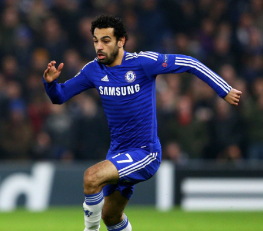
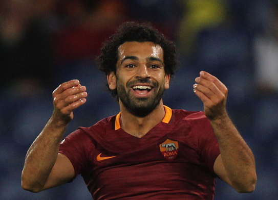
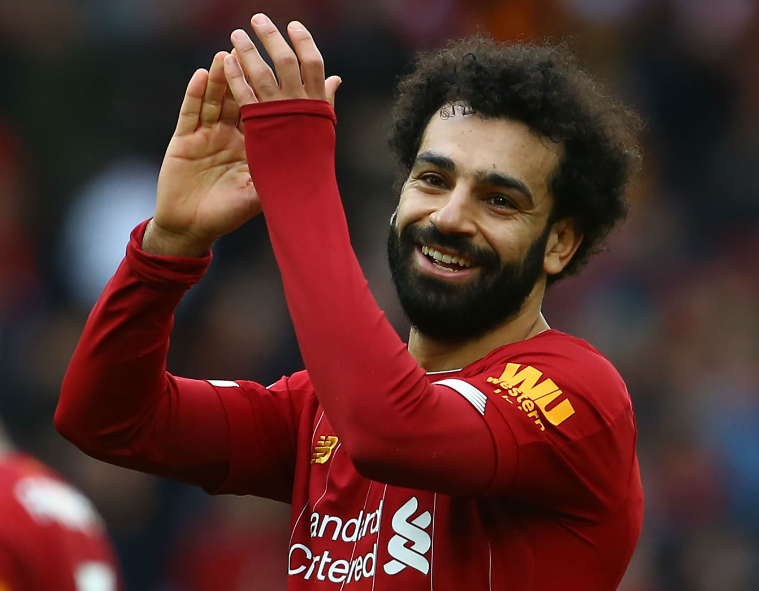

Career
Chelsea (2014-2015)On Januray 23rd 2014, Mohamed Salah was signed to Chelsea FC. Liverpool was interested in him as well, but Chelsea got Salah's signature earlier and signed a contract worth 11 million euros. During Salah's debut, he came on the field as a substitute in a 3-0 win over. Later he started scoring goals and assisting them, but he had in all barely went on the field. He had appeared in three Premier League, two Champions League and three cups. Once Salah and the other winger André Schürrle were criticized publicly by Jose Mourinho after a 2-1 win on an away field, Salah had then transferred to the Italian club Fiorentina. The contract lasted 18 months, and Salah was able to perform well during them making the club wanting Salah to stay, upon his refusal they were enraged. He was such a valuable asset to the team that Chelsea was furious when he rejected to stay. Salah was going to be transferred to Roma, and Fiorentina was so mad that they filed a complaint to FIFA, but it got erased and Salah was free to continue his journey to Roma. |
 |
|  |
Roma (2016-2017)During his time at Roma, Salah was able to score many goals and become the reason for their wins. However, once he had raptured his ankle alignment, he was out for a few months. Later, he was substituted as captain for a match and led the team to even more wins over teams like Genoa, Bologna, and Torino. The reason these teams are all European was because Salah played and had major success in the 2016-2017 Europa League. Later, when Liverpool saw the high level of skill Salah had, they gave him an astounding offer that no one could leave. |
Liverpool (2017-2023)
|
As Salah's fame grows, he is more known to have played for this team than any else. This is because of the high-scale success and skill that he has shown. Mohamed Salah's Liverpool debut in 2017 was marked by record-breaking achievements, earning him awards like the PFA Players' Player of the Year. Despite an injury in the 2018 Champions League final, his perserverance lead him to setting new records, becoming Liverpool's fastest player to reach 100 goals. To Salah, he wasn't just focused on scoring but beyond, he transitioned into a playmaker role, representing his adaptability. When other teams saw the skill of Salah, the gave him offers, but the bond he had created with his teammates, was much more valuable, leading to him staying on the team. Salah then continued to surpass even more milestones, becoming Liverpool's top scorer in European competitions and reaching 200 goals for the club. All of this proves that he will forever remain as a Liverpool Legend. |
 |